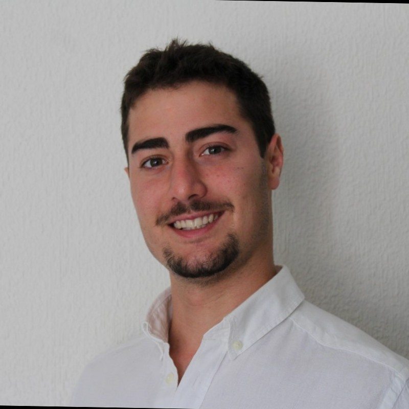

Álvaro Palao Martínez
Ingenierio en Geomática y Topografía
PERFIL PROFESIONAL
"Ingenierio en Geomática y Topografía con muchas ganas de seguir creciendo como profesional, con dos años de experiencia en proyectos de energía renovable trabajando como jefe de Topografía. Actualmente cursando el Master de ESRI con el objetivo de ampliar conocimiento en el ámbito de los SIG"
APTITUDES
- Compromiso
- Trabajo en equipo
- Comunicativo
- Ambicioso
- Responsanble
FORMACIÓN
2015-2020
Grado en Ingeniería Geomática y Topografía
Dic. 2020
Curso piloto profesional de drones
2022 -2023 (actual)
Máster GIS - ESRI
EXPERIENCIA PROFESIONAL
Enero - Abril (2020)
GRUPO INVESTIGACIÓN "SISTEMAS FOTOGRAMÉTRICOS Y TOPOMÉTRICOS" - UJAEN:
- Tratamiento nube de puntos capturadas mediante sensores LiDAR
- Procesamiento de vuelos fotogramétricos aéreos y terrestres
- Participación en el proyecto "Qubbet el-Hawa, Asuán"
Febrero 2021 - Septiembre 2022
TOPÓGRAFO EN FINCA TOPOGRAFÍA S.L:
- Levantamientos y replanteos topográficos en proyectos solares
- Trabajo de gabinete con ayuda de software Autocad
- Diseño, ejecución y post-procesado de vuelos fotogramétricos
PROGRAMAS
- Autocad - Nivel: Medio Alto
- Revit - Nivel: Medio
- Pix4D - Nivel: Medio Alto
- Excel - Nivel: Medio
- ArcGis - Nivel: Medio